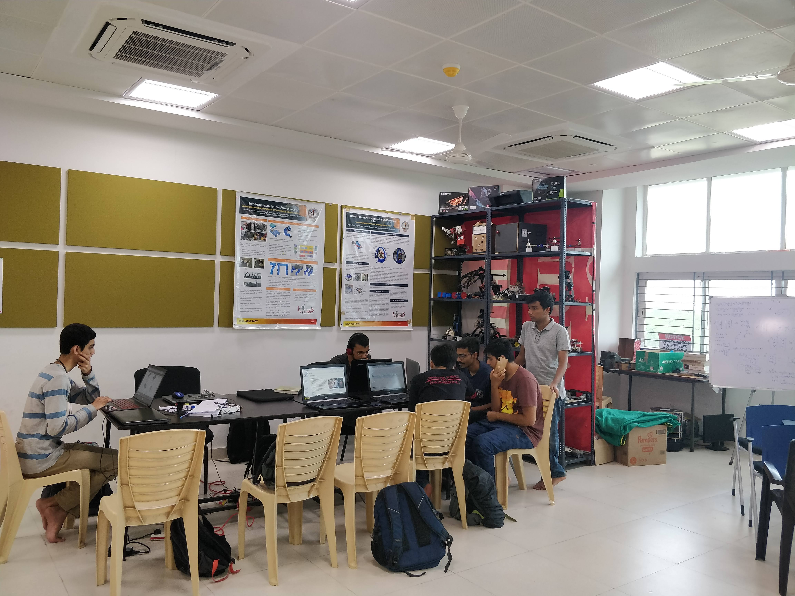

IvLabs
IvLabs websiteIvLabs serves as a platform for students from different engineering backgrounds to collaborate and work together with the utmost team spirit and avidity to bring innovative ideas into reality. They study and improve technologies that advance the fields of robotics and AI. They use their cross-domain knowledge, to create and innovate. They teach and inspire new students through workshops and mentor-based programs, transferring knowledge and creating new leaders to propel innovation.
